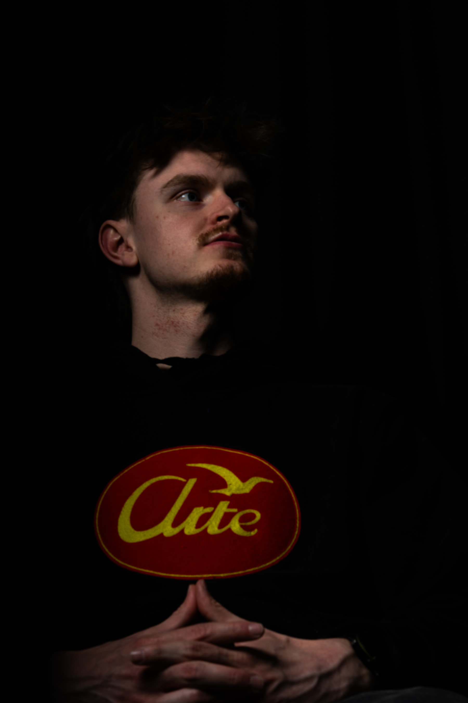

Crombruggen — demo
Tekst aan één kant, foto aan de andere — beide komen vanuit tegenovergestelde richtingen in beeld terwijl je scrolt. Vier varianten. Zeg welke je wil en ik bouw hem in de plaats van de huidige sectie.

Over mij
Met fotografie en video leg ik échte momenten, mensen en verhalen vast. Natuurlijk, sfeervol en met een eigen karakter. Van portret tot evenement.
Bekijk mijn werkOver mij
Met fotografie en video leg ik échte momenten, mensen en verhalen vast. Natuurlijk, sfeervol en met een eigen karakter. Van portret tot evenement.
Bekijk mijn werkOver mij
Met fotografie en video leg ik échte momenten, mensen en verhalen vast. Natuurlijk, sfeervol en met een eigen karakter. Van portret tot evenement.
Bekijk mijn werkOver mij
Met fotografie en video leg ik échte momenten, mensen en verhalen vast.
Natuurlijk, sfeervol en met een eigen karakter. Van portret tot evenement.
Bekijk mijn werk